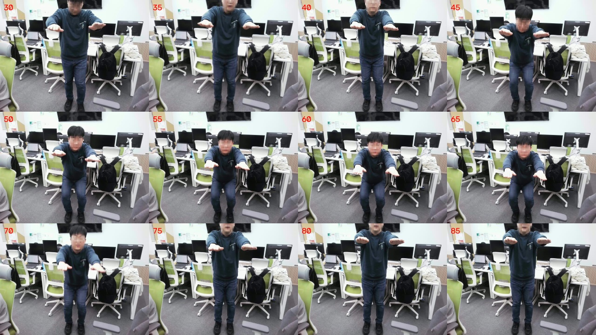
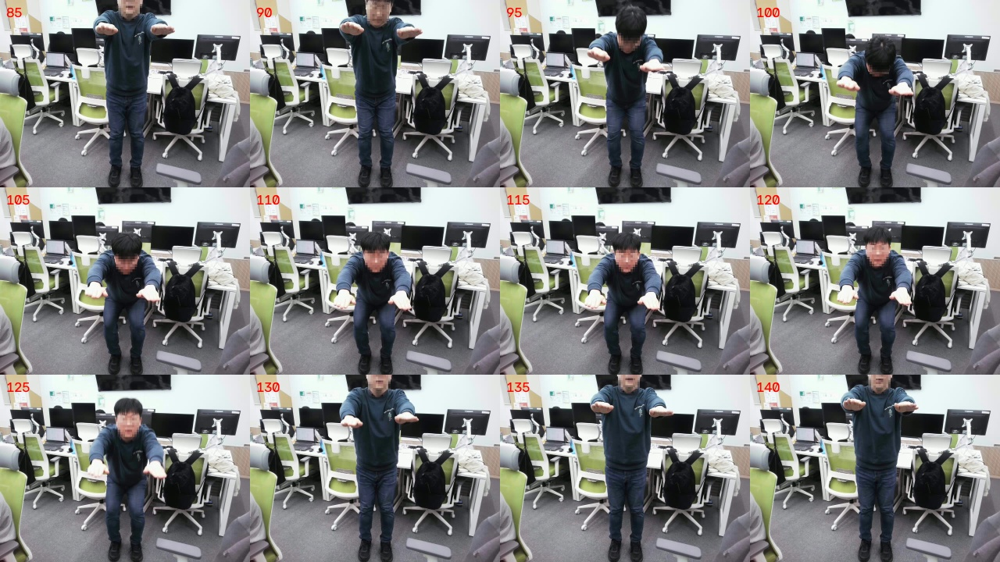
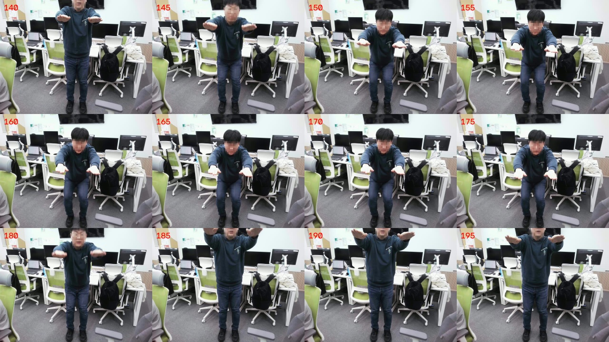
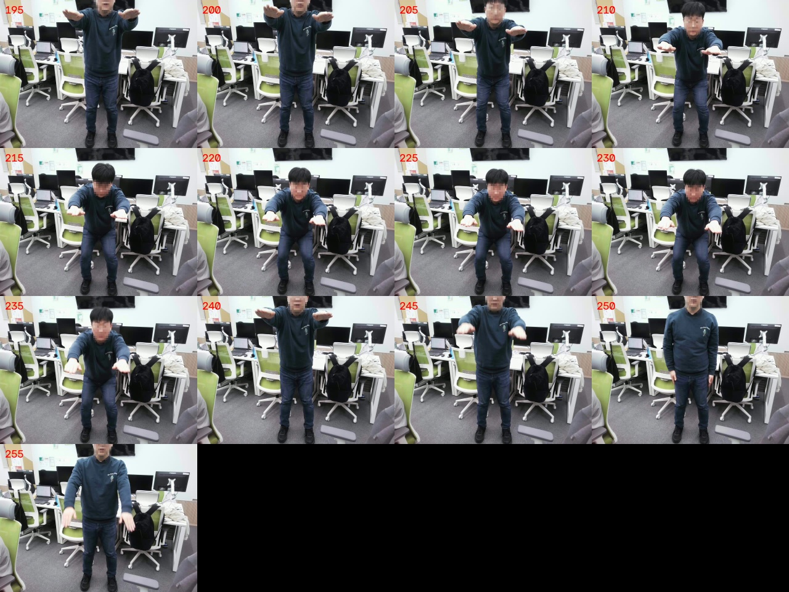
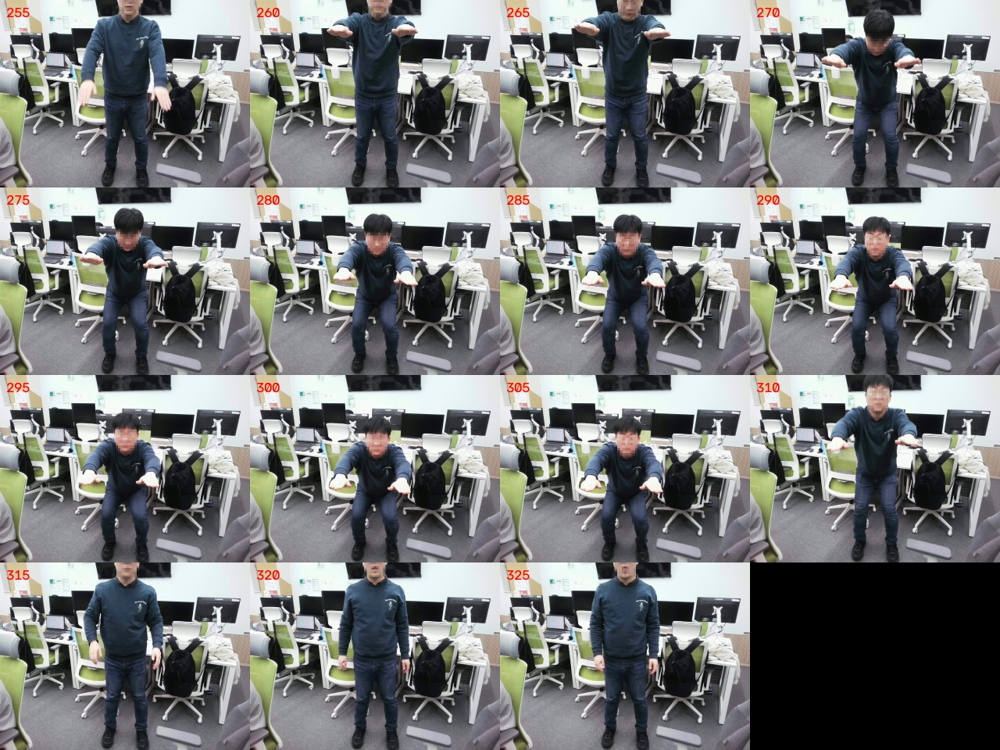

2026-10-23 · 추가 촬영 없음 · 기존 소스·모델·규칙 변경 없음 · 재학습하지 않음
하강·복귀 5회가 보인다. 정면 전용 네 관찰 항목에는 뚜렷한 불일치가 확인되지 않았다. 기존 AI는 모든 회차에 같은 0/2/보류/2 등급을 출력하며, 기존 규칙은 몸통 항목만 2등급을 출력한다. 두 방식 모두 전체 총점은 보류한다.
시각 초안은 전문가 정답이 아니다. 0.5초 간격 프레임 검토이며 연속 재생·전 프레임 검토는 하지 않았다. 미세 반동은 판단 한계가 있다. 네 정면 항목의 초안 100점은 실제 깊이·관절 부하·전체 자세의 만점을 뜻하지 않는다. 이전 모델의 항목 정의와 다르므로 총점 차이·MAE·정확도는 계산하지 않았다.
새 시각 라벨 순서: 좌우 몸통 안정 / 양쪽 움직임 균형 / 시작 자세 복귀 / 동작 제어.
기존 평가 순서: 하강 깊이 / 복귀·펴기 / 무릎·발 / 몸통 균형. 0·1·2 등급이며 *는 단일 등급 학습으로 오류 구분 미검증.
| 회차 | 저장 타임스탬프 | 시각 라벨 초안 | 기존 깊이 특징 | 기존 AI | 기존 규칙 | 6관절 동시 관측 |
|---|---|---|---|---|---|---|
| 1회 | 3.5–8.5초 | 2 / 2 / 2 / 2 | 0.997951 | 0 / 2* / 보류 / 2* | 보류 / 보류 / 보류 / 2 | 100.0% |
| 2회 | 8.5–14.0초 | 2 / 2 / 2 / 2 | 0.997918 | 0 / 2* / 보류 / 2* | 보류 / 보류 / 보류 / 2 | 100.0% |
| 3회 | 14.0–19.5초 | 2 / 2 / 2 / 2 | 0.998251 | 0 / 2* / 보류 / 2* | 보류 / 보류 / 보류 / 2 | 89.3% |
| 4회 | 19.5–25.0초 | 2 / 2 / 2 / 2 | 0.997887 | 0 / 2* / 보류 / 2* | 보류 / 보류 / 보류 / 2 | 76.8% |
| 5회 | 26.0–32.5초 | 2 / 2 / 2 / 2 | 0.998346 | 0 / 2* / 보류 / 2* | 보류 / 보류 / 보류 / 2 | 100.0% |
경계는 영상 프레임 기준 ±5프레임의 초안이다. 준비·휴식·종료 후 이동은 제외했다. 3·4회에서 오른쪽 무릎 누락이 있으며, 4회 동시 관측률은 80% 미만이다. 사용자가 자세를 잘못해서가 아니라 입력 관측 품질의 문제로 구분한다.
각 회차의 서기→하강→복귀를 직접 검토해 라벨을 먼저 고정했다. 그 후 기존 모델을 실행했다. 카메라는 위에서 아래를 향하므로 실제 각도 해석에 주의한다.





촬영 당시 팀 커밋 55fae6974bee80a71c50c8acbf2ce5fa782c58a6, 모델 2026.10.22-reviewed-clip.1, CPU Heavy 추출. 모델·코드 스냅샷과 PoseSequence 계약을 그대로 사용하고, 누락 슬롯은 NaN으로 유지했다. 시각적으로 완결 수행을 확인한 구간만 complete_attempt=True로 계산했다.
비교 전후 팀 코드·모델의 통합 SHA-256이 동일함: c850c28b43de189e32b2419147567247d08385c717c8ca90a6bc2c6d1f58d891